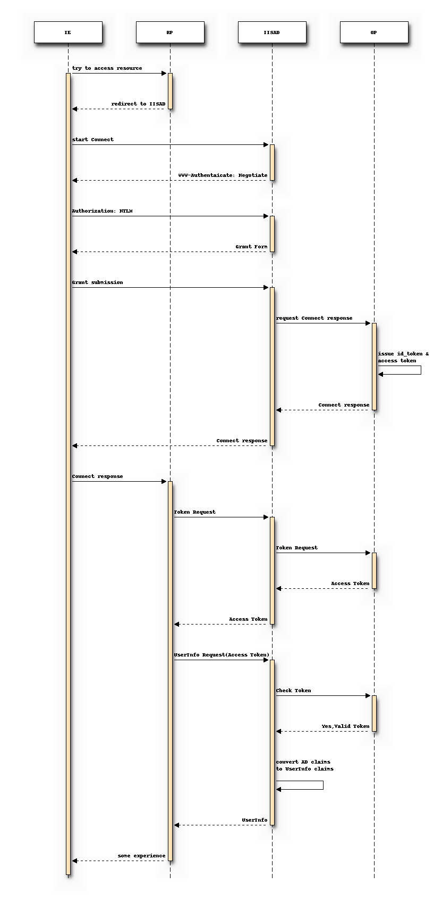

Active Directory & Connect¶
Gateway Senario¶

IISAD must autheticate RP to issue tokens.
But if RP(IIS/Windows-based) is a AD member server as well, RP can be Active Drectory authented for token request. RP registration to OP may be slightly differenct from the stardard Connect registration.
Otherwise, IISAD(apache or other HTTPD-based ) forward RP authentication to OP which check the credential.